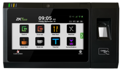

A manufacturing employee, nurse, retail associate, field technician and corporate employee may all use Workday—but that does not mean they should record time the same way. The goal is one Workday workforce-data strategy with collection methods matched to the way each population actually works.
One Workday Environment Does Not Mean One Punch Method
Enterprise organizations are rarely made up of one type of worker. A single company may simultaneously employ manufacturing teams, distribution workers, clinicians, retail associates, field technicians, corporate staff, contractors, temporary employees and remote workers. They may all ultimately feed the same Workday environment, but their physical work environments and operating needs can be completely different.
That creates a common architecture mistake: standardizing the employee experience when the enterprise really needs to standardize the data strategy.

- Manufacturing
- Distribution
- Healthcare
- High-volume shared access
- Retail
- Hospitality
- Smaller locations
- Temporary environments
- Field service
- Mobile teams
- Traveling employees
- Job-site work
- Corporate
- Administrative
- Remote employees
- Assigned computers
- Limited connectivity
- No regular smart-device access
- Specialized/remote populations
- Approved fallback coverage
Start With the Workforce—not the Product Catalog
Do not begin by asking, “How many clocks do we need?” Begin with: Who needs to record workforce events, where are they working and what must they accomplish?
For each population, understand the work location, whether work is fixed or mobile, transaction volume, authentication requirement, network availability, device access, labor complexity, employee self-service needs, environmental conditions and offline requirement. Then select the collection experience.
Example: one company, five workforces
All five populations can feed Workday. There is no requirement that they use the same endpoint. The requirement is that the resulting workforce data remains governed, understandable and consistent enough for Workday processing.
Standardize What Should Be Standardized
The enterprise should seek consistency in workforce rules, identity governance, security expectations, administrative ownership, data definitions, integration, auditability, support processes and Workday processing. It does not necessarily need consistency in physical device, screen size, authentication method, collection channel or connectivity method.
Core design principle
Different employee experiences can still produce one governed data model. Standardize the business outcome and control framework; allow the collection method to fit the way people actually work.
Where Each Collection Method Earns Its Place
Enterprise time clocks: where shared infrastructure matters
Purpose-built enterprise clocks are especially valuable when employees need a controlled shared interaction at the point of work—manufacturing, distribution, healthcare, retail, hospitality and other fixed workforce sites. They can support high transaction throughput, shared access, identity verification, labor selection, local workflow interaction, offline capability and centralized device operations.
Mobile: where the workforce moves
Mobile collection becomes more useful when the employee moves between job sites or customer locations instead of returning to a fixed shared endpoint. Field technicians, mobile supervisors and traveling employees are common examples. Mobile should extend the workforce-data strategy—not create a separate data silo.
Web and desktop: use the device employees already have
For corporate and administrative employees who routinely work from assigned computers, adding shared hardware may be unnecessary. Web or desktop collection can fit naturally into the work environment while still following centrally governed Workday rules.
Tablet kiosks: use deliberately
A shared tablet can make sense for certain smaller, temporary or lighter-duty environments. But the organization should still evaluate enclosure, mounting, authentication, power, device management, replacement lifecycle and support rather than assuming a consumer tablet automatically creates a lower-cost enterprise endpoint.
IVR and alternative methods: close legitimate coverage gaps
Some populations may not have reliable smartphone access, computer access, network connectivity or proximity to a shared endpoint. IVR or another approved alternative can fill the gap. The goal is not to maximize the number of collection methods; it is to eliminate unnecessary gaps in workforce coverage.
What most buyers overlook: people do not stay neatly inside one population
A manufacturing supervisor may travel to another plant. A field technician may report to a warehouse. A corporate employee may temporarily work at a distribution center. A nurse may float across facilities. A contractor may need a shared clock for six weeks.
Those cases force a better architectural question: is the environment designed around employee populations—or around fixed devices? The architecture should support approved cross-population scenarios without creating uncontrolled duplicate collection methods.
Example: the floating healthcare employee
Consider a nurse authorized to work at three hospitals with a schedule that changes weekly. A rigid design may assign the employee to only one clock population. That can create authentication or availability problems when the employee arrives at another facility.
A better design asks: At which sites is the employee authorized to punch? Which credentials work across those sites? Are the correct endpoints receiving the employee record? Are labor choices location-specific? Should the employee see the same workflow everywhere? What happens if the assignment changes that morning?
The Employee Experience Can Vary Without Breaking the Data Model
| Population | Possible interaction | What should remain consistent |
|---|---|---|
| Manufacturing | Badge → Punch → Job | Employee identity, time, labor context and Workday processing |
| Field service | Mobile login → Job site → Punch | Employee identity, time, labor context and approved metadata |
| Corporate | Web login → Punch | Employee identity, time, policy and Workday processing |
The interactions look different, but they can still produce consistent enterprise workforce events. That is what should be standardized.
What most buyers overlook: flexibility without governance becomes fragmentation
If every department is allowed to choose its own collection method, the organization can end up with disconnected local tools, inconsistent credentials, duplicate integrations, different support models and unclear ownership. Flexible collection should mean centrally governed flexibility—not unlimited local choice.
One Workforce May Need More Than One Approved Method
Some organizations intentionally support a primary and secondary collection method. A manufacturing employee may normally use the plant clock but have an approved alternative while working at another location. A field technician may normally use mobile but also use a shared endpoint at headquarters. Policy should determine when alternate collection is appropriate; technology should support that policy rather than invent it.
Design by Population
| Workforce | Illustrative primary method | Key reason |
|---|---|---|
| Manufacturing | Enterprise clock | High throughput, shared access, controlled point of work |
| Distribution | Enterprise / rugged clock | Environment, shared access and labor selection |
| Healthcare | Enterprise clock / shared endpoint | Fast identity, shift change and multi-site populations |
| Retail / Hospitality | Shared endpoint | Distributed locations and common workforce access |
| Field | Mobile | Job-site mobility and distributed work |
| Corporate | Web / desktop | Employees already work from assigned devices |
| Remote | Web / desktop | No shared physical workplace endpoint |
| Limited connectivity | Offline-capable / IVR | Coverage resilience where normal digital access is constrained |
Questions Workday buyers should ask
- What distinct employee populations do we actually have?
- Where does each population work, and is the work fixed or mobile?
- Which populations truly require a shared physical endpoint?
- Which employees already work from an assigned computer?
- Which populations have unreliable connectivity or need offline continuity?
- How much transaction volume occurs during peak shift change?
- What authentication method fits each environment?
- Which employees need job or labor selection?
- Can an employee be authorized across multiple sites?
- What happens when an employee transfers from one population to another?
- Can one employee use more than one approved collection method?
- Are business rules and data definitions consistent regardless of collection channel?
- Can IT administer the environment centrally?
- Who decides when a local site can deviate from the enterprise standard?
Decision rule
Use the most purpose-built and controlled collection method that fits the employee's real work environment, while keeping administration, security and Workday integration as consistent as practical.
Flexibility for the Workforce. Consistency for Workday.
ZKTeco WFM’s Workday strategy supports multiple collection experiences because one workforce does not fit one endpoint. Purpose-built Ultima clocks can serve high-throughput and controlled locations; kiosk, mobile, web, desktop/PC-based and IVR-style methods can fit other approved populations. The value is not the number of channels by itself. It is the ability to govern identity, data, integration, support and Workday processing consistently while matching the interaction to the work environment. CirrusDCS provides the Workday-specific collection and integration layer behind the approved architecture, so different employee experiences do not have to become independent data silos. ZKTeco WFM also brings hardware, application, cloud integration, implementation and ongoing support together, which is useful when employees transfer among sites or use more than one approved method. The design principle is simple: centralize the workforce-data strategy; decentralize the collection experience only where the work actually requires it.
A mixed workforce does not need one punch method. It needs one governed workforce-data strategy. Standardize identity, data, security, administration and Workday integration, then fit clocks, mobile, web, kiosk or other approved methods to the environments in which employees actually work.
Does Your Workday Collection Strategy Fit Every Part of Your Workforce?
Talk with ZKTeco WFM about employee populations, collection methods, authentication, offline requirements and one connected Workday architecture.
Design Your Workforce Collection Strategy